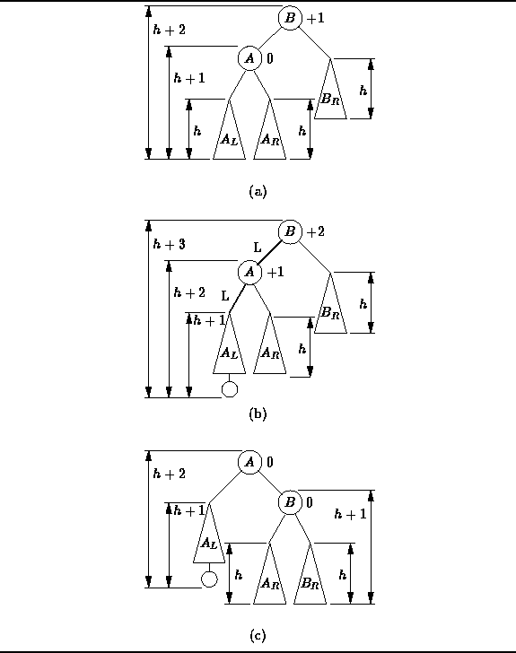

Data Structures and Algorithms
with Object-Oriented Design Patterns in C++
Data Structures and Algorithms
with Object-Oriented Design Patterns in C++
Figure  (a) shows an AVL balanced tree.
E.g., the balance factor for node A is zero,
since its left and right subtrees have the same height;
and the balance factor of node B is +1,
since its left subtree has height h+1 and its right subtree has height h.
(a) shows an AVL balanced tree.
E.g., the balance factor for node A is zero,
since its left and right subtrees have the same height;
and the balance factor of node B is +1,
since its left subtree has height h+1 and its right subtree has height h.

Figure: Balancing an AVL Tree with a Single (LL) Rotation
Suppose we insert an item into  , the left subtree of A.
The height of
, the left subtree of A.
The height of  can either increase or remain the same.
In this case we assume that it increases.
Then, as shown in Figure (b),
the resulting tree is no longer AVL balanced.
Notice where the imbalance has been manifested--node A is balanced but node B is not.
can either increase or remain the same.
In this case we assume that it increases.
Then, as shown in Figure (b),
the resulting tree is no longer AVL balanced.
Notice where the imbalance has been manifested--node A is balanced but node B is not.
Balance can be restored by reorganizing the two nodes A and B,
and the three subtrees,  ,
,  , and
, and  ,
as shown in Figure (c).
This is called an LL rotation ,
because the first two edges in the insertion path from node B
both go to the left.
,
as shown in Figure (c).
This is called an LL rotation ,
because the first two edges in the insertion path from node B
both go to the left.
There are three important properties of the LL rotation:
Not surprisingly, the left-right mirror image of the LL rotation is called an RR rotation . An RR rotation is called for when the root becomes unbalanced with a negative balance factor (i.e., its right subtree is too high) and the right subtree of the root also has a negative balance factor.
 Copyright © 1997 by Bruno R. Preiss, P.Eng. All rights reserved.
Copyright © 1997 by Bruno R. Preiss, P.Eng. All rights reserved.